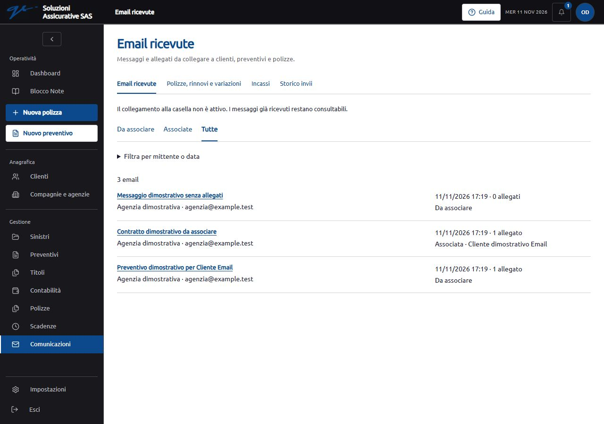
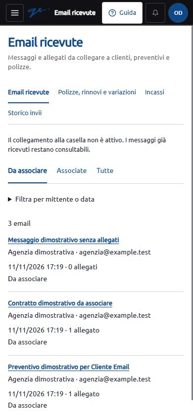
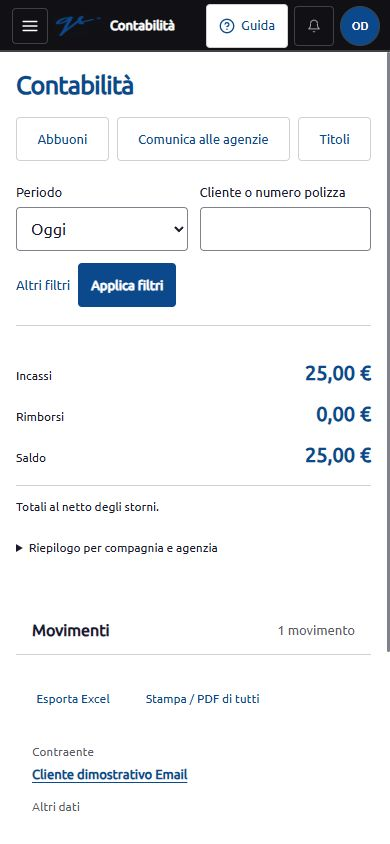

Collaudo dell’11 novembre 2026. La ricezione è predisposta nel codice e provata su dati dimostrativi separati. La casella dedicata e n8n non sono collegati; le nuove tabelle non sono state applicate all’archivio reale e la ricezione resta disabilitata.
Un endpoint protetto riceve messaggi e allegati, riconosce le consegne ripetute ed evita di duplicarle. La nuova sezione “Email ricevute”, nelle Comunicazioni, permette di consultare il testo, scaricare i file originali e collegare il messaggio a un cliente, una pratica preventivo o una polizza. Le associazioni sono correggibili e tracciate.
Ogni messaggio entra in “Da associare”. L’operatore sceglie la destinazione e il tipo di documento: questa predisposizione non effettua classificazioni automatiche, non crea offerte e non approva contratti o incassi. La documentazione del collegamento descrive il formato accettato, i limiti e la futura configurazione di n8n.
La revisione mantiene l’identità e la struttura di R4. Sono stati esaminati anche ricerca e scheda cliente, elenco polizze, scadenze e comunicazioni, intervenendo sui punti in cui il flusso poteva essere reso più chiaro o diretto.
| Controllo | Risultato |
|---|---|
| Regressione applicativa dopo la revisione dell’interfaccia | 93 test e 924 asserzioni superati, su SQLite in memoria. Comprende ricezione email, contabilità, permessi, confronto preventivi, pagine principali, letture e promemoria. |
| Test del codice dell’interfaccia | 82 test superati, comprese le indicazioni aggiunte alla guida. |
| Verifiche precedenti sulla ricezione email | 23 test specifici e 220 asserzioni superati. La precedente regressione estesa ha superato 107 test e 993 asserzioni, con un avviso PHPUnit già presente nel test dei backup. Le esecuzioni si sovrappongono e non vanno sommate come test distinti. |
| Compilazione | Completata. Restano gli avvisi preesistenti sulla dimensione di un pacchetto JavaScript e sulla combinazione di import statici e dinamici del rapporto contabile. |
| Desktop e smartphone | Browser interno a 1280 × 900 e 390 × 844, con archivio dimostrativo separato. Provati ricerca polizza dalla dashboard, ricerca cliente per numero polizza, apertura del pagamento dai titoli, selezione e confronto di due offerte, filtri mobili, periodi contabili, navigazione fra scadenze e comunicazioni, ricezione e associazione delle email. |
| Posta ricevuta | Provati ricerca cliente, conferma obbligatoria, collegamenti a pratica e polizza, rimozione dell’associazione, storico, download e consultazione dalle schede interessate. Verificati gli stati e la conservazione dei filtri. L’HTML ricevuto è mostrato come testo. |
| Controlli del browser | Nessun errore o avviso JavaScript rilevato nella sessione finale; nessuna eccedenza orizzontale della pagina nei controlli mobili effettuati. |
| Chiusura del collaudo | Accesso terminato, scheda del browser interno chiusa, dimensioni del browser ripristinate. Servizio temporaneo arrestato e porta 8012 verificata libera. |
I dati e gli importi mostrati nelle immagini sono dimostrativi. Il collaudo non costituisce una verifica di ogni possibile combinazione di dati, dispositivo o tecnologia assistiva.
I test della ricezione coprono autenticazione, HTTPS, limiti di frequenza e dimensione, formati dei file, duplicazioni e conflitti, annullamento delle consegne incomplete, permessi di consultazione e download, associazioni fra clienti diversi e modifiche concorrenti. Il corpo del messaggio e i nomi originali sono cifrati nel database; gli allegati sono conservati in un archivio privato.
Il controllo del tipo di file non è una scansione antivirus. Non è stato svolto un test con una casella reale o un flusso n8n e non è stato effettuato un ripristino completo del backup dell’archivio reale. Non si dichiara il progetto privo di vulnerabilità.
La versione e il pacchetto PHP effettivamente usati dal servizio R4 restano da verificare: il controllo è stato rinviato dall’utente. Il completamento dei test applicativi non prova la presenza delle correzioni nel motore PHP. Nessun aggiornamento PHP o riavvio del servizio R4 è stato effettuato.
Occorrerà predisporre l’archivio reale dopo backup e autorizzazione, scegliere la casella, configurare la credenziale del connettore e attivare il collegamento diretto o tramite n8n. Prima dell’uso effettivo andranno verificati HTTPS, limiti del server, runtime PHP e consegna completa di email e allegati dal fornitore scelto.


